Fase 5 · Jornada 37 · Así lo hacen en la realidad · Curso de robótica inteligente
Así lo hacen en la realidad II: drones autónomos en el mundo real
Qué autonomía vuela hoy de verdad, con qué sensores, cómputo y enlace, y qué la limita: DJI, Skydio, Zipline, Wing y Shield AI desmontados; de Swift y la A2RL a SPRIN-D; Ucrania bajo interferencia; los informes de accidentes; cómo se demuestra que un dron es seguro; y las cuentas que permiten leer una ficha técnica.
Objetivos de R1b
Al terminar esta jornada deberías poder…
- Dibujar la arquitectura publicada de cinco sistemas reales (sensores, estimación, autonomía, control, cómputo, enlace y operación) y decir qué calla cada empresa.
- Calcular a qué velocidad puede ir un dron con un alcance de percepción y una latencia dados, y comprobarlo con las fichas de DJI y Skydio.
- Estimar la potencia de un multirrotor en estacionario y la de un ala fija en crucero con especificaciones publicadas, y explicar por qué el reparto usa aviones con hélices de sustentación.
- Comparar la deriva sin GNSS de la navegación inercial, la odometría visual y la corrección con mapa, con los datos de SPRIN-D.
- Derivar la regla del tres por horas y decir cuántas horas harían falta para demostrar 10⁻⁷ fallos por hora; y calcular la relación J/S de un interferidor con Friis.
- Leer un informe de accidente, separar la causa de la narrativa y situar cada fallo en percepción, estimación, enlace, energía, software u operación.
Por qué importa
La pregunta: qué autonomía vuela hoy de verdad y qué la limita
Los temas A y B te dieron los métodos; R1a, cómo trabajan los labs. Aquí se miran drones en producción: millones de misiones, informes de accidentes y reglamentos. El hilo es la observabilidad parcial en el mundo real: sin GNSS, con el enlace interferido, de noche o con un obstáculo que no estaba en el mapa.
Historia
De un taller en Shenzhen a millones de misiones al año
Parte 1
El mapa del sector
Cuántos drones hay, quién hace qué, quién tiene licencia para repartir y adónde va el dinero.
El mapa · escala
Cuántos hay: las cifras oficiales y las de las empresas
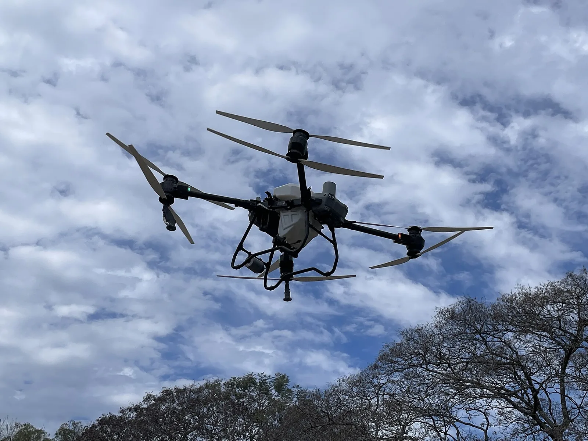

El mapa · quién hace qué
Siete oficios, un puñado de empresas y un dato abierto de cada una
Las carreras autónomas (A2RL) y los retos de navegación (SPRIN-D) no son un mercado, pero son donde se mide en público lo que la industria no enseña: van en la parte 3.
El mapa · reparto con licencia
Repartir con drones exige ser aerolínea: los siete de la FAA
| Operador | Desde | Primera vez que… |
|---|---|---|
| Wing | abr-2019 | certificado aéreo para drones (piloto único) |
| UPS Flight Forward | sep-2019 | certificado estándar; aeronave de Matternet |
| Amazon Prime Air | ago-2020 | dron de más de 55 lb |
| Zipline | jun-2022 | primer operador de ala fija |
| Causey Aviation | ene-2023 | con aeronaves de Flytrex |
| DroneUp | nov-2024 | sexto operador |
| Drone Express | abr-2025 | séptimo operador |
FAA, «Package Delivery by Drone (Part 135)», actualizada el 3-sep-2026 .
Part 135 es el reglamento de la FAA para transporte aéreo bajo demanda: el operador de drones se certifica como una pequeña aerolínea, con manuales, formación y mantenimiento.
- Escala con Walmart: Wing prevé más de 270 puntos para 40 M de personas en 2027 (E) ; Zipline, 300 sitios nuevos (E) .
- Europa: Manna (Irlanda) levantó 50 M$ en abril de 2026 para 40 bases en EE. UU. y Europa (E), y en junio paró en Irlanda (parte 5) .
El mapa · dinero y política
Adónde va el dinero, y una lista que cambia qué drones existen
| Empresa | Operación | Fecha |
|---|---|---|
| Zipline (E) | 1500 M$ a 21 500 M$ post-money | 5-nov-2026 |
| Shield (E) | Serie H de 1000 M$ a 28 800 M$ | 5-nov-2026 |
| Skydio (E, Axon) | Axon invierte 1200 M$ a 5200 M$ pre-money | nov-2026 |
| Anduril (E) | Serie H de 5000 M$ | 2026 |
Fuentes . Las valoraciones son de rondas privadas: dicen lo que creen los inversores, no lo que vuela.
«UAS and UAS critical components produced in a foreign country»
La FCC añadió a su Covered List todos los drones y componentes críticos (enlaces, controladoras, navegación, baterías, motores) fabricados fuera de EE. UU. Lo que está en la lista ya no puede recibir autorizaciones de equipo nuevas; lo ya autorizado sigue pudiendo importarse y venderse .
Exenciones para la lista Blue UAS del Pentágono (7-ene-2026); propuesta de prohibir la importación de equipos ya autorizados de ciertas empresas (17-jul-2026); aprobaciones condicionales (30-oct-2026) .
Parte 2
Anatomía de cinco sistemas
DJI, Skydio, Zipline, Wing y Shield AI, dibujados con la misma plantilla: lo que publican, lo que callan y lo que enseñan.
Anatomía · cómo leer los dibujos
Una plantilla para comparar sistemas que no se parecen
Cada sistema se dibuja con siete cajas, siempre en el mismo sitio:
| Caja | Qué contiene | Tema del curso |
|---|---|---|
| Sensores | Cámaras, LiDAR, radar, GNSS, IMU; alcance y condiciones | B3a, B3b |
| Estimación | Cómo sabe dónde está: VIO, GNSS, mapa | A4a, A4b |
| Autonomía | Evitación, planificación, qué hace sin enlace | A5, A13 |
| Control | Actuadores, límites de vuelo | A2, A3a |
| Cómputo | El procesador de a bordo | C1a, C1b, C5 |
| Enlace | Radio, red móvil, alcance, latencia | C3b |
| Operación | Quién vuela, desde dónde, cuántas veces | C7 |
Anatomía 1 · DJI Mavic 4 Pro
DJI: ver en todas direcciones y frenar a tiempo
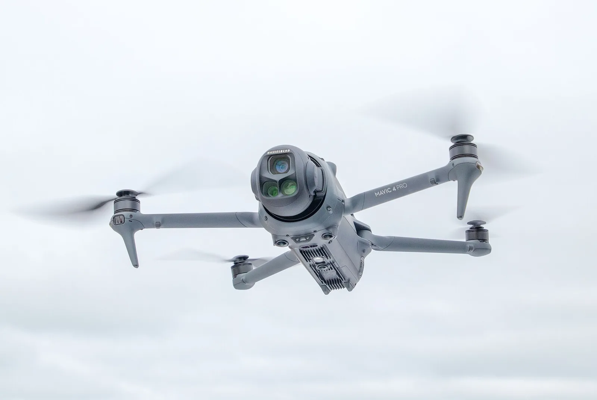

Anatomía 1 · DJI empresa
Matrice 5TD con Dock 4: sensores activos y un enlace que se encoge
Percepción redundante (E) : visión binocular en color en 360° (0,5–25 m, efectiva hasta 15 m/s), LiDAR giratorio de 110 m, radares de ondas milimétricas delante, arriba y abajo (un cable de 12 mm a 40 m) e infrarrojo 3D hacia abajo.
Drone-in-a-box: el Dock 4 (66 kg) cambia la batería en menos de 25 s y relanza en menos de 45 s; radio operativo de 10 km; 59 min de vuelo a 15 m/s sin carga (E).
Reparto pesado: el FlyCart 30 es un coaxial de cuatro ejes y ocho palas con radar, visión, receptor ADS-B y paracaídas; 30 kg a 16 km (E) . Es el ejemplo de la cuenta de energía (parte 7).
| Enlace O4 Enterprise (norma IC) | Alcance (E) |
|---|---|
| Sin obstáculos ni interferencias | 40 km |
| Interferencia, zona remota o costera | 15–32 km |
| Interferencia, suburbano | 5–15 km |
| Interferencia, urbano denso | 2,5–5 km |
| Tras edificios, con interferencia | ≈ 0–1 km |
| Latencia de vídeo a FlightHub 2 | 160 ms |
Anatomía 2 · Skydio X10
Skydio: seis cámaras y una GPU para volar sin GPS
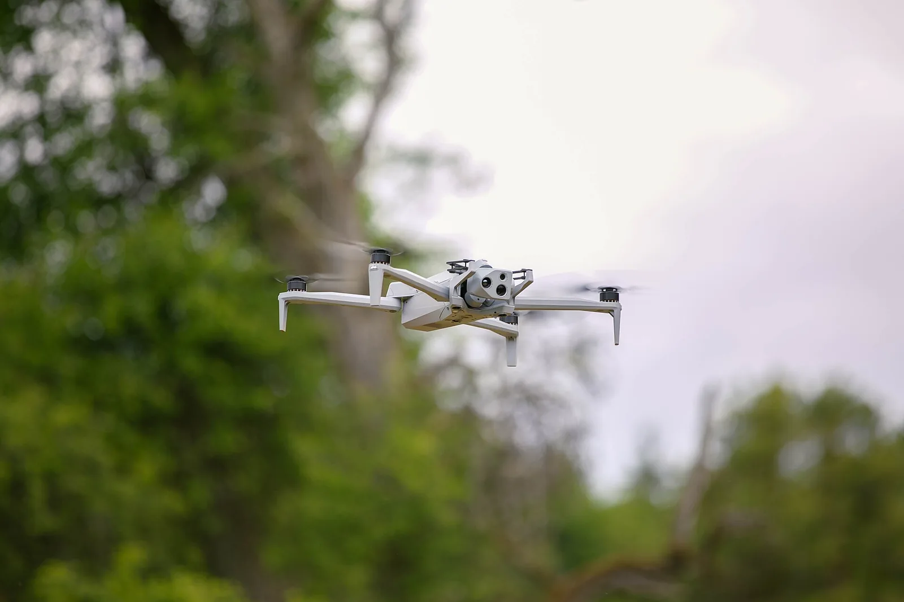
.jpg){kind=link}
Anatomía 2 · Skydio, la empresa
Del consumo al primer respondiente: una empresa reconstruida dos veces
Del MIT a dejar el consumo
Sus fundadores se conocieron en el MIT en 2009 y ayudaron a crear Project Wing antes de fundar Skydio en 2014 (E) . En agosto de 2023 cerró el negocio de consumo para centrarse en sus «over 1,500 enterprise and public sector customers» .
Una batería de un solo proveedor
Tras las sanciones de China (octubre de 2024), Skydio racionó las baterías a una por dron: «Batteries are one of the few components we have not yet moved out of China» . Un fallo de sistema que no está en ningún diagrama de bloques.
Drone as first responder
> 1000 docks en policía, ≈ 100 000 misiones al mes, primero en llegar «about 70% of the time» (E) . Ejército de EE. UU.: > 2500 X10D por > 52 M$ (E) . España: hasta 18 M€ para X10D del Ejército de Tierra (E, feb-2025) . Axon, distribuidor exclusivo en policía (E) .
Anatomía 3 · Zipline, de P1 a P2
Zipline: un avión de catapulta y, después, un híbrido que baja un «droid»
| P1 «Zip» (ala fija) | P2 «Zip» (híbrido) | |
|---|---|---|
| Masa máxima | 50 lb (22,7 kg) | < 63 lb (28,6 kg) |
| Carga | 4 lb (E) | 8 lb |
| Envergadura | ≈ 11 ft (3,4 m) | ≈ 7,8 ft (2,4 m) |
| Crucero | ≤ 56 kt; 60 mph (E) | 47 mph a 330 ft |
| Despegue | catapulta | vertical, 5 hélices, desde un dock |
| Entrega | paracaídas, 60–80 ft (E) | «droid» por cable desde 330 ft |
| Radio | 120+ mi ida y vuelta (E) | 10 millas por sitio |
P1: criterios de aeronavegabilidad de la FAA (2022) y ficha de Zipline . P2: evaluación ambiental de la FAA para Dallas–Fort Worth (dic-2025) .
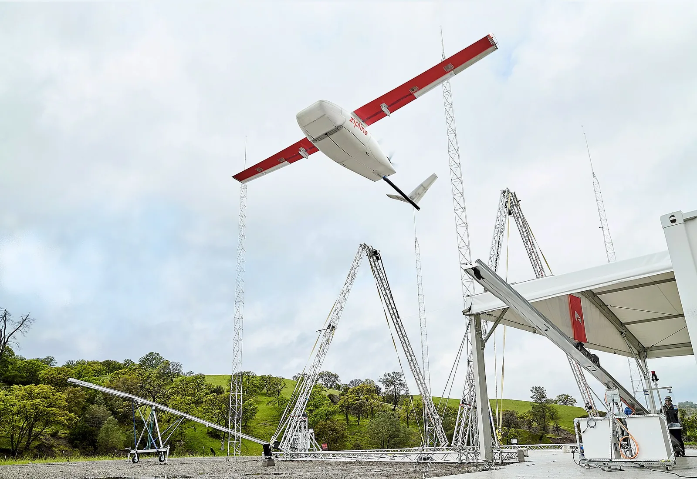
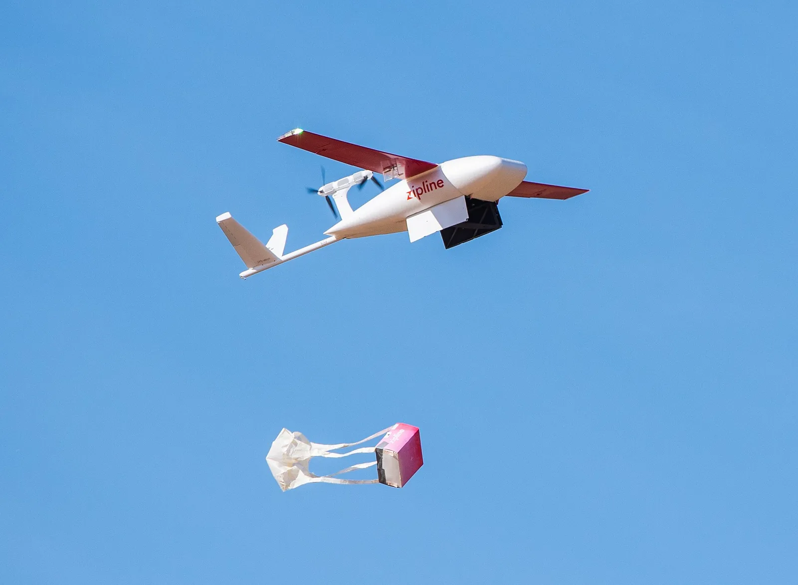


Anatomía 3 · Zipline P2
Zipline P2: desconflicción entre aeronaves y un plan si se corta el enlace
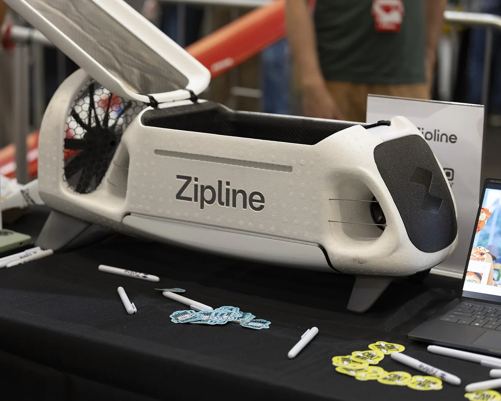
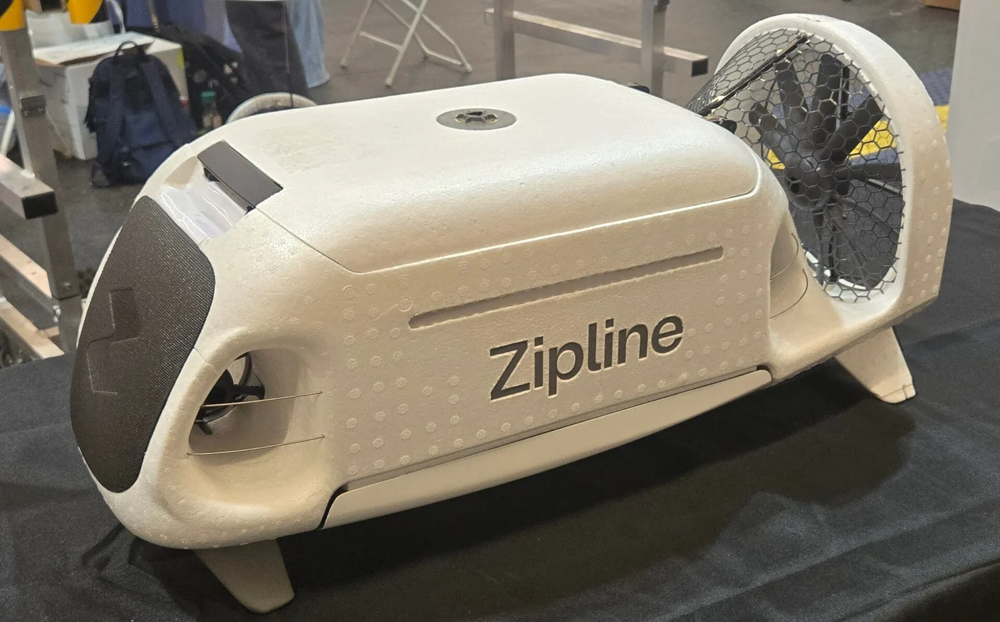


Anatomía 4 · Wing
Wing: aviones ligeros con dieciséis hélices y un mapa de su casa
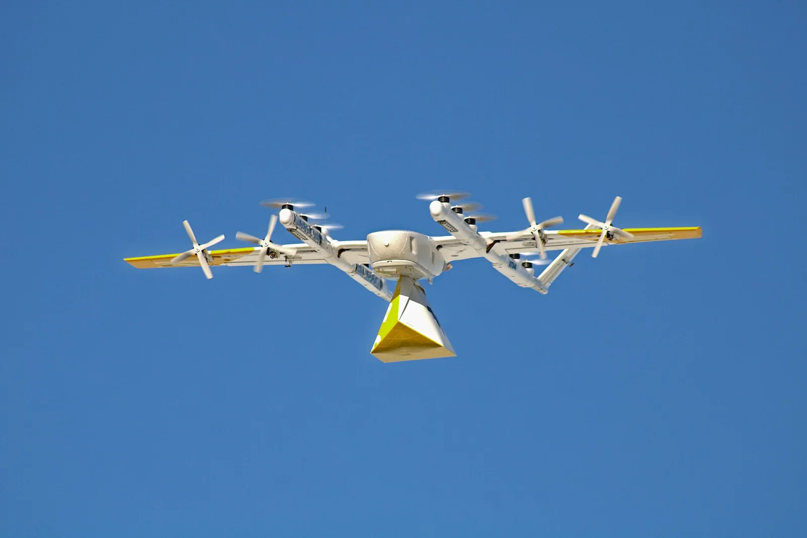
.jpg){kind=link}
Anatomía 4 · Wing, lo que enseña
Hacer observable el tráfico por regla, no por sensor
En diciembre de 2023 la FAA aprobó el DAA de Wing para volar más allá de la vista sin observadores. El DAA es «Automatic Dependent Surveillance-Broadcast-based» y vale en el espacio aéreo «where traditional aircraft are required to continually broadcast their position» (E) .
ADS-B: cada avión emite por radio su posición GNSS y su velocidad. Si la regla obliga a todos a emitir, el dron recibe el estado de los demás en vez de estimarlo con sus sensores.
Cada nest sirve un radio de 6 millas; los autocargadores remotos, solo 1 milla, «due to flight energy constraints» . Es la cuenta de la parte 7 dicha por la FAA.
Cada día, un vuelo de comprobación («FitBIT», a 6 ft); y hasta siete veces por semana, un estacionario a 60 ft «to update the reference map of the nest» (GeoBIT) .
Anatomía 5 · Shield AI V-BAT
Shield AI: un avión que despega de pie y decide solo cuando pierde el enlace
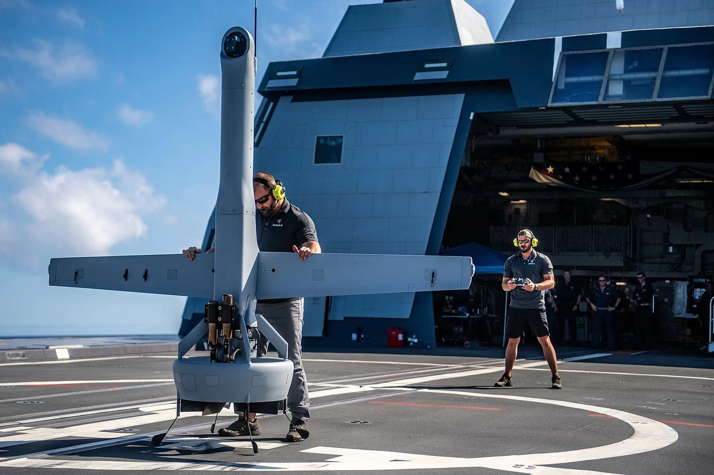

Anatomía 5 · Shield AI, lo que enseña
Sin GNSS: anclar el belief a un mapa del mundo
Lo que cuenta la empresa sobre la navegación del V-BAT (E) :
- «a vision-based system that looks for key landmarks and correlates with satellite imagery»;
- una estimación por optimización en ventana deslizante, heredada del cuadricóptero de interiores Nova 2;
- en investigación, un mapa magnético y un magnetómetro calibrado que busca anomalías;
- sin enlace, la autonomía «allows the V-BAT to return safely to comms ranges»; en equipo, los aviones comparten sus world models cuando pueden.
En Ucrania, más de 130 salidas a abril de 2025; la nota cita a las fuerzas ucranianas: puede «operate without GPS or communications» (E) .
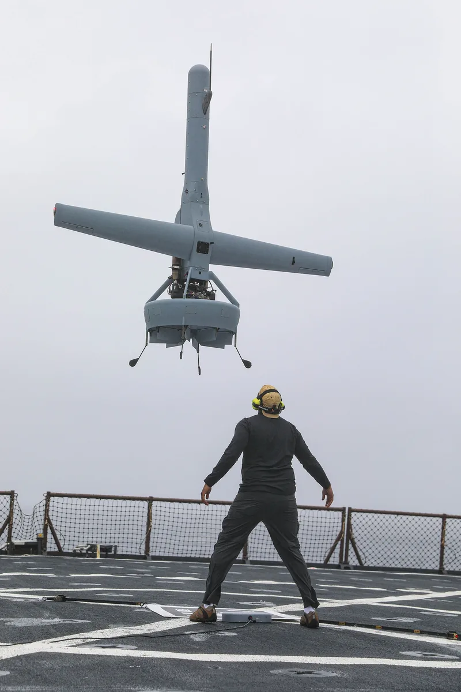

Anatomía · comparación
Los cinco, lado a lado
| DJI Mavic 4 Pro | Skydio X10 | Zipline P2 | Wing 7000W-B | Shield AI V-BAT | |
|---|---|---|---|---|---|
| Masa | 1,06 kg | 2,11 kg | < 28,6 kg | < 6,8 kg | ≤ 75 kg |
| Carga / masa | — | — | 0,13 | 0,18 | 0,24 |
| Velocidad | 18 m/s con evitación | 16 m/s con evitación | 21 m/s crucero | 26 m/s crucero | no publicada |
| Percepción | visión 360°, LiDAR, IR | 6 cámaras de 32 MP | DAA (E) | DAA por ADS-B (E) | EO/IR; hitos contra satélite (E) |
| Cómputo | no publicado | Jetson Orin + Snapdragon 865 | no publicado | no publicado | no publicado |
| Sin enlace | no detallado | no detallado | sigue y desconflicta | no detallado | vuelve a cobertura (E) |
| Fuente fuerte | ficha (E) | ficha (E) | FAA | FAA | web (E) |
Parte 3
Investigación que llegó a la realidad
De Swift a la A2RL, el reto sin GNSS de SPRIN-D, y qué pasó del laboratorio al producto.
Investigación · de Swift a la A2RL
De un laboratorio propio a un circuito ajeno con un solo ojo
Swift (UZH, 2023) ya lo conoces de M0 y A6a: ganó 15 de 25 carreras a tres campeones, con 40 ms de latencia sensomotora frente a 220 ms de media de los pilotos expertos . Corría en su propio circuito.
A2RL 2025 (Abu Dabi): el circuito, el dron y las reglas son de otros. MonoRace, de TU Delft, ganó la competición y a tres campeones del mundo en eliminatorias :
- 966 g; una cámara de obturador rodante a 90 Hz (820 × 616, 155° × 115°); IMU a 1 kHz (acelerómetro) y 2 kHz (giróscopo);
- la visión y el estimador en una Jetson Orin NX; una red de 3 × 64 neuronas en la controladora (STM32H743 a 480 MHz) manda a los motores a 500 Hz.
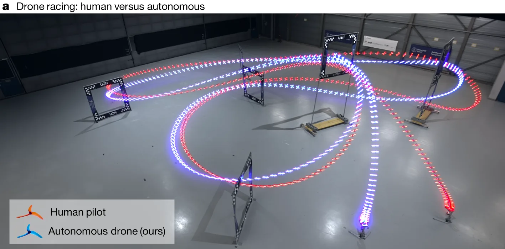
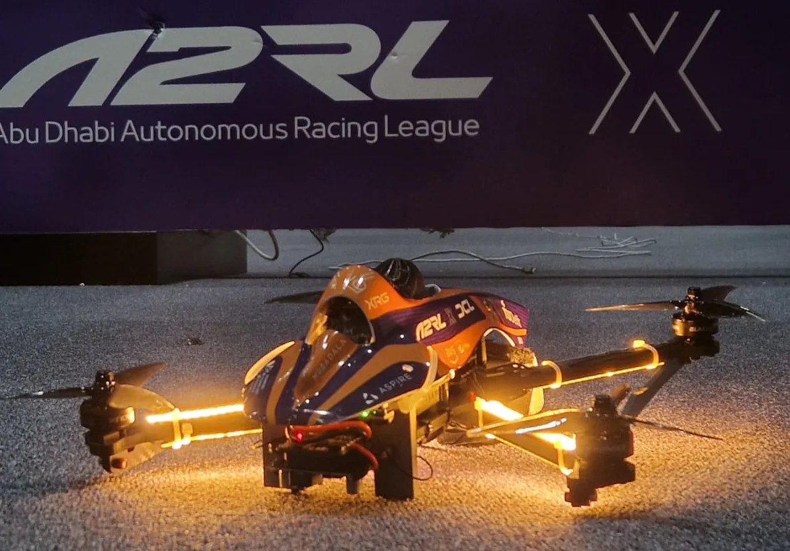
Investigación · velocidad y robustez
Casi cincuenta veces más rápido que en 2016, y todavía frágil
El controlador ganador completó 5 de 7 vuelos; los dos choques, por saturación de la IMU. Con la corrección por modelo, 3 de 3. Unos cables de cámara mal colocados corrompieron entre el 8 % y el 75 % de las imágenes, y en un vuelo el dron recorrió más de 25 m sin ninguna válida .
Wilson al 95 % (T1b): 5/7 → [0,36; 0,92]; 3/3 → [0,44; 1]. Ejemplo 7 del script.
Temporada 2 (21–22 de enero de 2026): sin LiDAR, estéreo, GPS ni posicionamiento externo. Final al mejor de nueve, 4–4 antes de la última manga: el dron autónomo de TII Racing tocó una puerta y no se recuperó; ganó el piloto Minchan Kim .
Investigación · SPRIN-D, el reto
SPRIN-D: 9 km sin GNSS por debajo de 25 m
El reto. La agencia alemana de innovación SPRIND organizó en septiembre de 2024 una final en la base de Erding: recorrer 9 km con 27 waypoints «without GPS or manual control», con agua, niebla o humo, y recoger un paquete al final . Según los ganadores, por debajo de 25 m sobre el suelo, con menos de 25 kg y waypoints en un mapa impreso con unos 20 m de incertidumbre, entregado 30 min antes .
El resultado. Ganó Fly4Future, una empresa surgida de la Universidad Técnica de Praga (CTU); segunda, Beyond Vision (Portugal). De nueve equipos europeos, solo tres volaron autónomos más de 100 m . La segunda edición la ganó en agosto de 2026 la Universidad de Klagenfurt .
Investigación · SPRIN-D, el belief
Un filtro de partículas que compara bordes de edificios y árboles
| # | Paso | Por qué |
|---|---|---|
| 1 | Mapa previo: alturas sobre el terreno de nubes de puntos abiertas, en celdas de 1 m, orientado al norte | Se calcula antes de volar; no hace falta GNSS |
| 2 | A bordo: mapa de alturas local con el LiDAR | Lo que el dron «ve» alrededor |
| 3 | Solo bordes con gradiente de más de 5 m, en mapas binarios | La altura absoluta no es fiable (barómetro); edificios y árboles sí |
| 4 | Correlación del mapa local con cada posición del previo | Da un mapa de parecido: la verosimilitud \(p(o_t \mid x_t)\) |
| 5 | Las partículas avanzan con la odometría y la brújula y se pesan con ese parecido | Es el filtro de Bayes de A4a con muestras |
Werner et al. (2026), §III . \(x_t\): posición del dron en el instante \(t\); \(o_t\): el mapa local observado.
Investigación · SPRIN-D, la deriva medida
La odometría deriva del 0,6 % al 7,3 %; el mapa la deja en metros
- Lo que se gana: «below 11 m» en vuelos de escala kilométrica, frente a hasta 53 m de la odometría.
- Donde no gana: en campo abierto el método «mostly relied on the odometry» (vuelos 239 y 242: 8–9 m de odometría frente a 9–11 m). Sin bordes, no hay observación.
- La brújula tuvo sesgos lentos de hasta 30° cerca de edificios y hormigón armado.
- La mecánica: cuando falló el amortiguador de la IMU, «VIO drift increased sharply».
- La energía, no la estimación: los vuelos de más de 1 km acabaron por batería.
Investigación · del laboratorio al producto
Qué pasó de los laboratorios a los productos, y qué no
Personas
Los fundadores de Skydio se conocieron como doctorandos en el MIT, donde trabajaban en drones autónomos, y ayudaron a crear Project Wing antes de fundar la empresa en 2014 (E) . Lo que se transfirió fue gente.
Parte 4
Ucrania: autonomía bajo interferencia
Solo a nivel de sistema y con fuentes públicas fiables: por qué la guerra electrónica empuja la autonomía y qué dice de verdad la evidencia.
Ucrania · por qué
La guerra electrónica apaga los canales de los que depende un dron
El CSIS, con decenas de entrevistas a mandos y fabricantes ucranianos, lo resume así: la navegación autónoma quita la dependencia del «constant manual control and stable communications», ambos «vulnerable to electronic warfare» .
RUSI, con trabajo de campo en 2025: la guerra electrónica es «an integral part of all operations», pero «jamming simultaneously degrades the efficiency of friendly systems»; los equipos ya no son grandes plataformas sino antenas distribuidas y modulares .
Ucrania · qué se automatiza
Automatizar la navegación, no la decisión; y un cable como alternativa
Qué hace la IA hoy, según el CSIS: analizar vídeo, reconocer y seguir objetos, y navegar. Los sistemas «do not perform the entire process of finding, selecting, and engaging targets independently»; las decisiones de empleo «remain squarely in the human domain» y el operador puede anular la autonomía .
Con qué cómputo: chips pequeños y baratos con cómputo limitado, en los que el procesado en tiempo real «complicates the task of object recognition»; y modelos de visión abiertos y autopilotos abiertos como ArduPilot .
Con qué límites: niebla, lluvia, nieve y noche reducen la eficacia de las cámaras ópticas e infrarrojas. Conclusión del informe: «Modern unmanned systems in Ukraine are not yet fully autonomous» .
Un dron que lleva una bobina de fibra y se pilota por cable no tiene enlace radio que interferir. El Ministerio de Defensa ucraniano contrató 374 000 en 2025 y a abril de 2026 ya había recibido «more than 92%» de esa cifra . RUSI recuerda que los pilotos con fibra también se pueden detectar .
Ucrania · la evidencia
Cifras de eficacia: débiles, agregadas y en contra unas de otras
Según entrevistas recogidas por el CSIS, la navegación autónoma subiría la tasa de éxito al alcanzar el objetivo (target engagement success rate) de «around 10 to 20 percent» a «around 70 to 80 percent». En otro apartado, el mismo informe da una base de 10–15 % . No dice cómo se midió ni con cuántos casos.
La experiencia de los operadores con el guiado terminal automático «has not been encouraging»: los consultados por RUSI no lo usarían si mantienen el vídeo .
| Escala (cada una es una cosa distinta) | Cifra | Fuente |
|---|---|---|
| Producción de 2024 | ≈ 2 M | CSIS (mar-2025) |
| De producción nacional en 2024 | 96,2 % | CSIS |
| Con IA, comprados en 2024 | 10 000 | CSIS |
| Capacidad anual declarada | 10 M | MoD (jun-2025) |
| Plan de producción de 2026 | > 7 M | Gobierno (ene-2026) |
Fuentes . La producción real de 2025 no se da: solo hay plan y capacidad en fuentes oficiales.
Parte 5
Lo que falla
Informes oficiales del NTSB y del AAIB, fallos publicados por los propios equipos y lo que solo se sabe por la prensa.
Lo que falla · Tolleson, 1 de octubre de 2025
Dos MK30 contra una grúa que no estaba en el mapa de la mañana
Dos drones de reparto Amazon MK30 chocaron con la pluma de una grúa móvil a unos 150–165 ft; la grúa estaba extendida a unos 197 ft. La ruta estaba planificada a unos 200 ft. Los equipos de tierra revisan el entorno desde las azoteas «twice per day»; la revisión de las 06:58 no vio nada, y la grúa se montó después .
MK30: 83,2 lb de masa máxima, seis motores, alas escalonadas, cámara y aviónica redundantes y «"detect and avoid" technology», según la evaluación ambiental de la FAA (may-2026) .
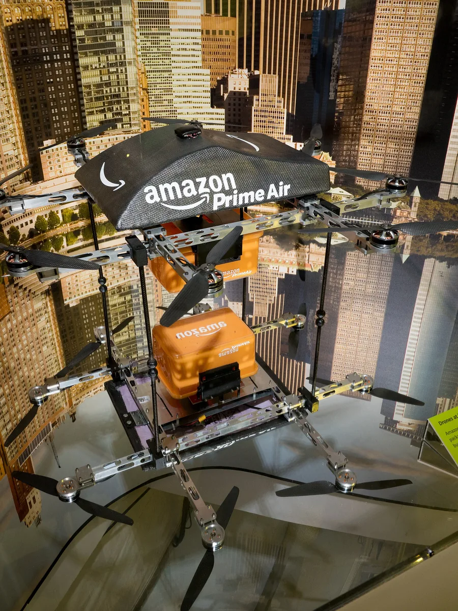
.jpg){kind=link}
Lo que falla · tabla de causas
Casi ningún fallo es «la red se equivocó»
Lo que falla · sin informe oficial
Lo que solo se sabe por la prensa, y por qué importa que sea así
Más de 50 aviones perdidos en 18 meses
Según dos fuentes anónimas, «more than 50 of about 200 upgraded V-BATs» de la flota interna de Shield AI se destruyeron en accidentes en 18 meses. La empresa dice que sus clientes tuvieron «only 10 "operational mishaps"» desde principios de 2025 y que acumula 18 000 h de vuelo desde 2019 .
Un paracaídas en la autopista
Un Zip aterrizó con su paracaídas en los carriles de la autopista 6 tras un «midflight issue»; según Zipline, sin heridos ni daños . Es el protocolo que la empresa publica: si no puede resolver un fallo, paracaídas y alarma sonora .
Parte 6
Demostrar que es seguro
La regulación como requisito técnico en Europa y EE. UU., y la cuenta que dice cuántas horas hacen falta para demostrar una tasa de fallo.
Seguridad · Europa
Europa: riesgo de la operación, no tamaño del dron, y objetivos por hora
Tres categorías. Abierta (bajo riesgo): clases C0 a C4, de menos de 250 g a menos de 25 kg, por debajo de 120 m, con subcategorías según la cercanía a personas. Específica (riesgo medio): autorización tras una evaluación de riesgo. Certificada (alto riesgo) .
SORA 2.5. La evaluación de riesgo de la categoría específica (de JARUS) entró en la guía de EASA el 29 de septiembre de 2025 para simplificar «while maintaining a high level of safety» . Asigna a cada operación un nivel de garantía e integridad, el SAIL; a los niveles V y VI EASA les aplica una condición especial de alto riesgo para drones ligeros .
U-space: espacios aéreos que designa cada Estado tras una evaluación de riesgo, con reglamentos en vigor desde enero de 2021 .
| SAIL | Mayor | Peligroso | Catastrófico |
|---|---|---|---|
| V | ≤ 10⁻⁴ | ≤ 10⁻⁵ | ≤ 10⁻⁷ |
| VI | ≤ 10⁻⁴ | ≤ 10⁻⁶ | ≤ 10⁻⁸ |
Probabilidad máxima de cada condición de fallo por hora de vuelo, para equipos de drones ligeros de alto riesgo (EASA, medio de cumplimiento Light-UAS.2510, tabla 1, 11-feb-2025) . Además: «No single failure shall result in a catastrophic failure condition».
Seguridad · EE. UU.
EE. UU.: la Part 108 aún es una propuesta, y reparte el derecho de paso
Part 108: propuesta de la FAA del 7 de agosto de 2025 para que volar más allá de la vista sea rutina sin exenciones, con aeronaves de hasta 1320 lb y servicios de terceros como la gestión de tráfico .
Estado a 12 de noviembre de 2026: el Federal Register solo tiene documentos de la fase de propuesta (el último, del 10 de febrero de 2026); la regla final está en revisión en la Casa Blanca (OIRA) desde el 10 de julio de 2026 . Hasta entonces, cada operador vuela con exenciones o con la Part 135 .
El dron cede el paso a toda aeronave tripulada que emita su posición por ADS-B o con un dispositivo de conspicuidad electrónica, y a las que operan en zonas de densidad de población de categoría 5, en espacio aéreo de clase B o C o cerca de aeropuertos. A cambio, tendría derecho de paso sobre las tripuladas que no emiten. La FAA descartó exigir ADS-B a todos por debajo de 500 ft por su coste .
Seguridad · la regla del tres por horas
Cero fallos en T horas: ¿qué tasa de fallo puedo descartar?
| Símbolo | Qué es | Ejemplo |
|---|---|---|
| \(\lambda\) | Tasa de fallo: fallos esperados por hora de vuelo | objetivo 10⁻⁷ /h |
| \(T\) | Horas de vuelo sin fallos. En la parte 7, \(T\) es el empuje | 2,5·10⁶ h |
| \(N\) | Fallos observados en esas \(T\) horas | 0 |
| \(\alpha\) | Riesgo de descartar una \(\lambda\) que es cierta | 0,05 (95 %) |
| # | Paso | Por qué |
|---|---|---|
| 1 | \(N \sim \text{Poisson}(\lambda T)\) | Fallos raros e independientes, a tasa constante |
| 2 | \(P(N = 0) = e^{-\lambda T}\) | Término \(k = 0\) de \(e^{-\mu}\mu^k/k!\), con \(\mu = \lambda T\) |
| 3 | Descartar \(\lambda\) si \(e^{-\lambda T} \lt \alpha\) | Con esa tasa, ver 0 fallos sería demasiado raro |
| 4 | \(\lambda_{95} = -\ln\alpha/T = \ln 20/T\) | La frontera \(e^{-\lambda T} = \alpha\), con \(\alpha = 0{,}05\) |
| 5 | \(\lambda_{95} = 2{,}996/T \approx 3/T\) | De ahí el nombre: regla del tres |
| 6 | \(T = 600\,000\) h: \(\lambda_{95} = 5{,}0\cdot10^{-6}\) /h | Ejemplo 5 del script |
R1a la deriva para tasas de éxito: con \(n\) éxitos seguidos, \(p_L = \alpha^{1/n} \approx 1 - 3/n\). Es la misma cuenta: con probabilidad de fallo \(p\) pequeña, \((1-p)^n \approx e^{-pn}\), y la binomial tiende a la Poisson. Aquí el «ensayo» es la hora de vuelo.
Seguridad · horas frente a flotas
Para demostrar 10⁻⁷ por hora volando harían falta 30 millones de horas
- Amazon publicó unas 908 h de pruebas del MK30 (marzo de 2025, E). Aunque no hubiera fallado ninguna vez, solo descartaría tasas por encima de 3,3·10⁻³ /h. Y en esas pruebas hubo accidentes (parte 5).
- Shield AI da 18 000 h desde 2019 (E), con pérdidas documentadas por Reuters: la regla del tres no se aplica con fallos.
- Zipline, con 150 M de millas, roza los 10⁻⁶ /h para lo que ella llama «safety incident». Es la mayor experiencia publicada, y aun así queda dos órdenes por encima de 10⁻⁸.
Parte 7
Las cuentas de un sistema real
Cuatro cuentas para leer una ficha técnica: distancia de parada, energía, deriva sin GNSS e interferencia del enlace.
Cuenta 1 · distancia de parada · el problema
Ver a R metros, reaccionar en τ segundos y frenar con a m/s²
| Símbolo | Qué es | Mavic 4 Pro |
|---|---|---|
| \(v\) | Velocidad al detectar el obstáculo (m/s) | 18 m/s |
| \(\tau\) | Latencia total: percepción, decisión y actuación (s) | no publicada: se barre |
| \(a\) | Deceleración máxima en vuelo nivelado (m/s²) | 6,87 m/s² |
| \(\theta_{\max}\), \(g\) | Inclinación máxima; gravedad, 9,807 m/s² | 35° |
| \(d\) | Distancia hasta pararse desde la detección (m) | |
| \(R\) | Alcance de medición de la percepción (m) | 24 m |
Cuenta 1 · distancia de parada · la derivación
De dónde sale \(d = v\tau + v^2/(2a)\), y por qué \(a = g\tan\theta_{\max}\)
| # | Paso | Por qué |
|---|---|---|
| 1 | \(d_1 = v\,\tau\) | Durante la latencia la velocidad no cambia |
| 2 | \(v(t) = v - a\,t\) hasta \(t_f = v/a\) | Frenada a deceleración constante \(a\) |
| 3 | \(d_2 = \int_0^{t_f}(v - at)\,dt = v t_f - \tfrac12 a t_f^2\) | Distancia = integral de la velocidad |
| 4 | \(d_2 = \dfrac{v^2}{a} - \dfrac{v^2}{2a} = \dfrac{v^2}{2a}\) | Sustituir \(t_f = v/a\) |
| 5 | \(d = v\tau + \dfrac{v^2}{2a} \le R\) | Hay que parar dentro de lo que se mide |
| 6 | \(v_{\max} = a\left(-\tau + \sqrt{\tau^2 + 2R/a}\right)\) | Raíz positiva de \(\tfrac{1}{2a}v^2 + \tau v - R = 0\) |
Si \(\tau = 0\), el paso 6 da \(v_{\max} = \sqrt{2aR}\), la fórmula de frenado de siempre.
| # | Paso (la deceleración) | Por qué |
|---|---|---|
| 1 | \(T\cos\theta = m g\) | Para no perder altura, la componente vertical del empuje \(T\) sostiene el peso |
| 2 | \(m a = T\sin\theta\) | La componente horizontal es la que frena |
| 3 | \(a = g\tan\theta\) | Dividir 2 entre 1 |
| 4 | \(a_{\max} = g\tan\theta_{\max}\) | La inclinación máxima publicada acota la frenada |
Cuenta 1 · distancia de parada · el ejemplo
La cota de 18 m/s de DJI sale casi exacta de la física
- Mavic 4 Pro: \(a = 9{,}807\tan 35° = 6{,}87\) m/s². A 18 m/s con \(\tau\) = 0,1 s: \(d = 1{,}8 + 23{,}6 = 25{,}4\) m, justo por encima de los 24 m que mide. Para parar en 24 m: 17,8 m/s con 50 ms, 17,5 con 0,1 s, 16,2 con 0,3 s.
- En Sport, a 25 m/s, haría falta ver a 48 m: por eso DJI quita la evitación en ese modo.
- Skydio X10: parar desde 16 m/s en 20 m exige 6,96 m/s² con 0,1 s, unos 35° de inclinación.
- Matrice 5TD (no publica su inclinación; con la del Mavic): a 15 m/s le bastan unos 18–21 m y su visión mide hasta 25 m. El radar y el LiDAR no están para ir más rápido, sino para ver cables y ver de noche.
Cuenta 2 · energía · el estacionario
Cuánto cuesta estar quieto en el aire, con un dron real
| Símbolo | Qué es | FlyCart 30, 30 kg de carga |
|---|---|---|
| \(m\), \(T\) | Masa (kg) y empuje (N), \(T = mg\). Aquí \(T\) no son horas | 95 kg; 931,6 N |
| \(A\) | Área de disco total de los rotores (m²) | 5,94 m² |
| \(\rho\) | Densidad del aire (kg/m³) | 1,225 |
| \(v_i\), \(P_i\) | Velocidad inducida y potencia ideal | 8,0 m/s; 7454 W |
| \(P\), \(\eta_g\) | Potencia eléctrica real y eficiencia global \(P_i/P\) | 13 229 W; 0,56 |
| # | Paso (A1) | Por qué |
|---|---|---|
| 1 | \(T = 2\rho A v_i^2\) | Teoría de cantidad de movimiento: la estela lleva el doble de \(v_i\) |
| 2 | \(P_i = T v_i = \dfrac{T^{3/2}}{\sqrt{2\rho A}}\) | Potencia = empuje × velocidad en el disco; despejar \(v_i\) de 1 |
| 3 | \(P = P_i/\eta_g\) | Pérdidas de pala, coaxial, motor y variador en un solo número |
El dato real. El FlyCart 30 de DJI es un coaxial de cuatro ejes y ocho palas con rotores de 1375 mm y dos baterías de 1984,4 Wh; DJI da unos 18 min de estacionario con 30 kg y 29 min sin carga, a nivel del mar y sin viento (E) .
- Coaxial: cada pareja de rotores comparte disco, así que \(A = 4\pi(0{,}6875)^2 = 5{,}94\) m².
- Con 95 kg: \(P_i = 931{,}6^{1{,}5}/\sqrt{2\cdot1{,}225\cdot5{,}94}\) \(= 7454\) W.
- La batería entera en 18 min: \(P = 3968{,}8\ \text{Wh}/0{,}3\ \text{h}\) \(= 13\,229\) W, así que \(\eta_g = 0{,}56\). Sin carga: 4219 W frente a 8211 W, \(\eta_g = 0{,}51\).
Cuenta 2 · energía · el crucero con ala
Un ala sostiene el peso gastando solo lo que cuesta vencer la resistencia
| Símbolo | Qué es | Zipline P1 |
|---|---|---|
| \(W = mg\) | Peso (N) | 22,7 kg → 222,4 N |
| \(L\), \(D\) | Sustentación y resistencia (N) | |
| \(L/D\) | Fineza del avión | 10 (supuesto) |
| \(\eta\) | Rendimiento de hélice y motor | 0,6 (supuesto) |
| \(v\) | Velocidad de crucero (m/s) | 26,8 m/s (60 mph, E) |
| # | Paso | Por qué |
|---|---|---|
| 1 | \(L = W\) | Vuelo nivelado: el ala sostiene el peso |
| 2 | \(D = W/(L/D)\) | Definición de fineza |
| 3 | \(P_{\text{útil}} = D\,v\) | La hélice empuja con \(D\) a velocidad \(v\) |
| 4 | \(P = \dfrac{W v}{(L/D)\,\eta}\) | Dividir por el rendimiento para tener potencia eléctrica |
| 5 | \(\dfrac{P}{v} = \dfrac{W}{(L/D)\,\eta}\) | Energía por metro: no depende de \(v\) a \(L/D\) fijo |
Con los datos de la FAA. El P1 de Zipline pesa como máximo 50 lb y cruza a un máximo de 56 kt ; Zipline da 60 mph de crucero y más de 120 millas de ida y vuelta (E) .
- \(P = 222{,}4 \cdot 26{,}8/(10\cdot0{,}6) = 994\) W: unos 44 W por kg, un tercio que en estacionario.
- Energía por kilómetro: \(222{,}4/6 = 37{,}1\) J/m = 10,3 Wh/km.
- 120 millas (193 km) en 2,0 h: unos 2 kWh de batería útil. Zipline no publica su capacidad: es una cota con supuestos, no un dato.
Cuenta 2 · energía · la comparación
Por qué el reparto usa aviones con hélices de sustentación
- El multirrotor gasta casi 6 veces más por km y kg que un ala de fineza 10: 2,6 frente a 0,45 Wh/(km·kg).
- Por eso Zipline, Wing y el MK30 son híbridos: hélices verticales para despegar y entregar, ala para el crucero.
- Y por eso el estacionario se acorta: Wing entrega en unos 30 s a 23 ft ; el P2 de Zipline se queda arriba y baja el «droid» por cable.
- El radio lo decide la energía, no la autonomía: Wing restringe sus autocargadores a 1 milla «due to flight energy constraints» , y en SPRIN-D la batería cortó todos los vuelos de más de 1 km .
Cuenta 3 · deriva sin GNSS
Sin GNSS: la inercial se dispara, la odometría deriva y el mapa acota
| Navegación | Error de posición | Por qué |
|---|---|---|
| Inercial pura (B3a) | \(\tfrac12 b_a t^2 + \tfrac16 g\,b_g t^3\) | Se integran el sesgo del acelerómetro dos veces y el del giróscopo tres |
| Odometría (VIO, LiDAR) | \(\approx \delta\,s\) | Cada tramo añade un error proporcional a su longitud |
| Con mapa | acotado (5–13 m en SPRIN-D) | Cada correspondencia reancla el belief |
\(b_a\) = 5,16 mm/s² y \(b_g\) = 1,32·10⁻⁴ rad/s (B3a, ejemplo 6); \(t\), tiempo sin GNSS; \(s\), distancia recorrida; \(\delta\), deriva relativa de la odometría.
- A 15 m/s, en 60 s (900 m): inercial 9,3 + 46,6 = 55,9 m; odometría entre 5 y 66 m; con mapa, unos 10 m.
- En 93 s (1,4 km), la inercial ya va por casi 200 m: sin ayuda externa no sirve más allá de unos segundos.
Cuenta 4 · interferencia · el problema
Por qué un interferidor cercano gana a una señal lejana
| Símbolo | Qué es |
|---|---|
| \(J\), \(S\) | Potencia recibida del interferidor y de la señal útil (W o dBm) |
| \(P_J\), \(P_S\); \(G_J\), \(G_S\) | Potencia y ganancia de antena de cada emisor |
| \(d_J\), \(d_S\) | Distancia de cada emisor al receptor (m) |
| \(f\), \(c\) | Frecuencia (Hz) y velocidad de la luz |
| # | Paso | Por qué |
|---|---|---|
| 1 | \(P_r = P_t\,G_t\,G_r\left(\dfrac{c}{4\pi d f}\right)^2\) | Friis en espacio libre: la potencia se reparte sobre una esfera de radio \(d\) |
| 2 | \(\dfrac{J}{S} = \dfrac{P_J G_J}{P_S G_S}\left(\dfrac{d_S}{d_J}\right)^2\) | Dividir: \(G_r\), \(f\) y \(c\) se cancelan si es la misma banda y la misma antena |
| 3 | \(\left.\tfrac{J}{S}\right|_{\text{dB}} = \Delta P + \Delta G + 20\log_{10}\dfrac{d_S}{d_J}\) | En decibelios los productos se suman |
| 4 | Para GNSS: \(J/S = (P_J - \text{pérdida}(d_J)) - S\) | \(S\) ya viene medida: −158,5 dBW = −128,5 dBm (IS-GPS-200) |
Versión sencilla, con antenas isótropas y sin obstáculos ni filtrado. El enlace completo, la modulación y las contramedidas van en C3b.
Cuenta 4 · interferencia · el ejemplo
Un vatio a 40 km basta para que un receptor GPS civil pierda la señal
A 40 km y 1575,42 MHz la pérdida es \(20\log_{10}(4\pi d f/c) = 128{,}4\) dB: con 1 W (30 dBm), \(J/S = 30 - 128{,}4 + 128{,}5 = 30{,}1\) dB. ¿Cuánto aguanta el receptor?
| # | Paso (la tolerancia) | Por qué |
|---|---|---|
| 1 | \(C/N_0 \approx S\,R_c/J\) | Al correlar, el interferidor se reparte en unos \(R_c\) Hz y domina al ruido |
| 2 | \((J/S)_{\max} = 10\log_{10}R_c - (C/N_0)_{\text{umbral}}\) | Despejar \(J/S\), en dB |
| 3 | \(60{,}1 - 30 = 30{,}1\) dB | \(R_c\) = 1,023·10⁶ chip/s; umbral de 30 dB-Hz |
Hacia dónde va
Los drones reales en los próximos dos años
- Más allá de la vista como rutina. La Part 108 está en revisión final y SORA 2.5 ya está en Europa : el cuello de botella pasa de la licencia a la operación a escala (hasta 400 vuelos por sitio y día en las propuestas de Zipline y Wing que la FAA evaluó en Texas ).
- Sensores activos en drones medianos para ver de noche y ver cables (DJI con LiDAR y radar) .
- Navegación sin GNSS por correspondencia con mapa, en defensa y en retos civiles (SPRIN-D 2.0 en 2026) .
- Observabilidad por regla: conspicuidad electrónica para la aviación tripulada como condición del derecho de paso (Part 108) .
Conexión con la tesis
Los problemas abiertos de la industria son los de tu tesis
| Problema de la tesis | Dónde aparece hoy | Datos públicos que puedes usar |
|---|---|---|
| Belief con GNSS degradado | SPRIN-D (filtro de partículas sobre mapa), V-BAT (hitos contra satélite), Ucrania | Tabla I de SPRIN-D; registros de PX4 con pérdida de GNSS (laboratorio) |
| Pérdida de enlace | Zipline sigue y desconflicta sin piloto; V-BAT vuelve a cobertura | Evaluaciones ambientales de la FAA (perfiles y procedimientos) |
| Observabilidad del entorno | Tolleson (mapa viejo); Wing (mapa del nest); DJI (visión con > 0,1 lux) | Informes del NTSB en CAROL |
| Latencia y frecuencia | Distancia de parada; MonoRace a 500 Hz con visión a 90 Hz | Fichas de DJI y Skydio; datasets UZH-FPV y TII |
| Cómputo limitado | SPRIN-D solo en CPU; X10 con Orin; chips baratos en Ucrania | Papers de MonoRace y SPRIN-D |
| Evaluación creíble | MonoRace 5/7; flotas sin tasa por hora | Wilson (T1b), regla del tres (R1a y hoy) |
Conexión con la tesis
Preguntas abiertas que te deja la jornada
¿Qué haces cuando el mapa miente?
El mapa de alturas de SPRIN-D y la ruta de Tolleson eran mapas previos. ¿Cómo incluye tu belief la probabilidad de que el mapa esté mal o haya cambiado, y cómo lo detecta?
¿Cuánto vale tu τ?
Si tu política con belief tarda 50 ms más que un estimador clásico, ¿cuántos m/s pierdes con un alcance de 20 m? ¿Lo compensa en precisión?
¿Qué n necesitas?
MonoRace publicó 5 de 7; SPRIN-D, ocho vuelos. ¿Cuántos vuelos (o cuántas horas simuladas) necesitas para que tu resultado sea creíble, y cómo los repartes entre simulación y registros reales?
| Tema | Qué retoma de hoy |
|---|---|
| C1b, C5 | El cómputo publicado (Orin en el X10 y en MonoRace, CPU en SPRIN-D) y cuánto cuesta en latencia y energía llevar tu modelo a bordo |
| C2b | La plantilla de siete cajas aplicada al dron de la tesis, con su presupuesto de latencia, cómputo, energía y peso |
| C3b | El enlace de mando y la J/S, ya con MAVLink, radio y pérdidas emuladas |
| C7 | Los informes de accidentes y el análisis de registros, con la normativa europea |
| B7b | Los fallos que el simulador no tenía (la IMU saturada y las imágenes corrompidas de MonoRace) |
| D1, D2 | La n, Wilson y la regla del tres como protocolo de evaluación; SPRIN-D y MonoRace en el mapa de lecturas |
Resumen
Lo que te llevas de R1b
Lo que vuela
Multirrotores con mucha percepción (DJI, Skydio), híbridos de reparto (Zipline, Wing) y alas de largo alcance (V-BAT). Publican alcance y velocidad; callan estimador, cómputo, latencia y fallos. La FAA y los papers rellenan parte del hueco.
Canales, energía y mapas
GNSS y enlace que se apagan (Ucrania, J/S de 30 dB a 40 km con 1 W); energía que decide el radio (casi 6 veces más por km y kg en multirrotor); mapas que envejecen (Tolleson). Los fallos oficiales son de operación, contingencias y software.
Para leer una ficha
\(d = v\tau + v^2/(2a)\) explica los 18 m/s de DJI. Estacionario: 140 W/kg; crucero con ala: 44 W/kg. Deriva: inercial con \(t^3\), odometría del 0,6–7,3 %, mapa acotado. Regla del tres: \(3/T\); 10⁻⁷ pide 3·10⁷ h.
Autoevaluación · 1 de 3
Velocidad y energía
1. Un dron mide obstáculos hasta 30 m, puede inclinarse 30° y su latencia total es de 0,2 s. ¿A qué velocidad máxima puede ir para parar a tiempo?
\(a = 9{,}807\tan 30° = 5{,}66\) m/s²; \(v_{\max} = 5{,}66\,(-0{,}2 + \sqrt{0{,}04 + 2\cdot30/5{,}66}) = 17{,}3\) m/s. Con 18,4 m/s (\(\sqrt{2aR}\)) has olvidado la latencia: recorrerías 3,7 m sin frenar.
2. Un multirrotor de reparto duplica su masa al despegue con el mismo rotor. ¿Por cuánto se multiplica su potencia ideal de estacionario?
\(P_i = T^{3/2}/\sqrt{2\rho A}\): al duplicar \(T\), \(P_i\) se multiplica por \(2^{3/2} = 2{,}83\). En un ala fija, \(P = Wv/((L/D)\eta)\) solo se duplicaría.
Autoevaluación · 2 de 3
Fiabilidad e interferencia
3. Una flota acumula 600 000 h de vuelo sin ningún fallo. ¿Qué tasa de fallo puede descartar con un 95 % de confianza?
\(\lambda_{95} = \ln 20/T = 2{,}996/600\,000 = 5{,}0\cdot10^{-6}\) /h. La 1,7·10⁻⁶ sería \(1/T\), que solo da un 63 % de confianza. Cero fallos sí acotan: por arriba.
4. Un interferidor que estaba a 40 km de un receptor GPS se acerca a 4 km sin cambiar su potencia. ¿Cuánto sube la J/S?
La potencia recibida va con \(1/d^2\): \(20\log_{10}(40/4) = 20\) dB. Si estaba en el límite (30 dB), ahora le sobran 20 dB: el receptor no tiene ninguna opción.
Autoevaluación · 3 de 3
Observabilidad y credibilidad
5. En Tolleson, dos drones chocaron con una grúa montada después de la revisión matinal del entorno. ¿Qué describe mejor el problema?
El informe preliminar no habla de GNSS ni de enlace: la grúa se montó entre las 07:30 y las 08:00, tras la revisión de las 06:58, en una ruta a unos 200 ft. El estado oculto era el del mundo, no el del dron.
6. Pregunta abierta: una empresa anuncia «10 000 h de vuelo sin incidentes con navegación sin GNSS». ¿Qué preguntarías antes de creerlo y qué podrías concluir si fuera cierto?
Ver respuesta
Preguntas: qué cuenta como incidente (¿paracaídas, aterrizajes de emergencia, pérdidas en pruebas?); cuántas de esas horas fueron realmente sin GNSS y en qué condiciones (altura, terreno, luz); quién mide (la empresa o un tercero); si las horas son de vuelo o de servicio; y si hay informes de accidentes o prensa que digan otra cosa (como con Zipline o el V-BAT). Si fuera cierto y bien definido, con la regla del tres solo descartaría tasas por encima de \(\ln 20/10\,000 \approx 3\cdot10^{-4}\) por hora: suficiente para un objetivo de nivel «mayor» (10⁻⁴), pero lejísimos de los 10⁻⁷–10⁻⁸ de una condición catastrófica, que habría que argumentar con arquitectura y análisis. Y la deriva sin GNSS habría que darla como error frente a distancia, como SPRIN-D.
Lecturas guiadas
Tres lecturas esenciales y por dónde entrarles
Werner et al., SPRIN-D
Lee: §III (mapa de alturas y filtro de partículas) y §IV (Tabla I y lecciones).
Busca: por qué usan gradientes y no alturas, y en qué terreno el método no mejora a la odometría.
Responde: ¿qué parte de su filtro sustituirías por un belief aprendido y cómo lo compararías con su RMSE?
NTSB WPR26LA001 y WPR25LA103
Lee: los dos informes enteros (tres y seis páginas).
Busca: qué datos registraba el dron, qué dice el operador y qué concluye el NTSB.
Responde: ¿qué sensor o qué procedimiento habría cambiado el resultado de cada uno? Escribe la tabla de causas a tu manera.
Bahnam et al., MonoRace
Lee: la plataforma, la estimación con modelo durante la saturación de la IMU y la sección de interferencias de cámara.
Busca: qué falló en la realidad y no en la simulación.
Responde: ¿qué añadirías a tu simulador para que esos fallos aparecieran antes del vuelo?
Para profundizar: latencia de percepción y velocidad ; CSIS y RUSI sobre Ucrania; Swift ; la propuesta de la Part 108, apartado VI.J ; el medio de cumplimiento de EASA .
Laboratorio
Un sistema real en números
Unas 3 h, en CPU. Enunciado en lab/README.md.
- Ficha de arquitectura de un sistema real elegido por ti, con la plantilla de la parte 2 y cada dato con su fuente y su estado.
- Envolvente de velocidad segura frente a alcance y latencia; alcance y energía de un dron de reparto con datos de la FAA; deriva sin GNSS.
- Fiabilidad: horas para acotar cada objetivo de EASA frente a las horas publicadas de una flota.
- Registros de PX4 con pérdida o degradación de GNSS: cómo reacciona el EKF.
Cuentas y figuras: figuras/figuras_r1b.py (su salida, en figuras/salida_ejemplos.txt).
Referencias · 1 de 4
Referencias
- FAA (2026). FAA Aerospace Forecast Fiscal Years 2026–2046. Emerging Aviation Entrants: Unmanned Aircraft Systems and Advanced Air Mobility. Flota recreativa activa, registro Part 107 y pilotos remotos a diciembre de 2025. faa.gov
- FAA. «Package Delivery by Drone (Part 135)», actualizada el 3 de septiembre de 2026, consultada el 12 de noviembre de 2026. faa.gov
- DJI. Nota de prensa del informe anual de agricultura 2025/2026 (29 de abril de 2026). Afirmaciones de la empresa. dji.com
- DJI. «Company», consultada el 12 de noviembre de 2026. Afirmaciones de la empresa. dji.com
- Bondar, K. (2025). Ukraine's Future Vision and Current Capabilities for Waging AI-Enabled Autonomous Warfare. CSIS, 6 de marzo de 2025. csis.org
- Watling, J. (2025). Emergent Approaches to Combined Arms Manoeuvre in Ukraine. RUSI Insights Paper, octubre de 2025, pp. 13–16. rusi.org
- Gobierno y Ministerio de Defensa de Ucrania: capacidad de 10 M de drones al año (mod.gov.ua, 2 de junio de 2025); plan de más de 7 M en 2026 (kmu.gov.ua, 26 de enero de 2026); 374 000 drones de fibra óptica contratados en 2025 (zbroya.gov.ua, 21 de abril de 2026). zbroya.gov.ua
- FCC, Public Safety and Homeland Security Bureau. Avisos DA 25-1086 (22 de diciembre de 2025), DA 26-22 (7 de enero de 2026), DA 26-742 (17 de julio de 2026) y DA 26-1181 (30 de octubre de 2026) sobre UAS en la Covered List. docs.fcc.gov
- Anduril. «Anduril Announces $5B Series H Raise» (2026). Afirmación de la empresa. anduril.com
- Auterion. «Company» (Lorenz Meier, cofundador y CEO), consultada el 12 de noviembre de 2026. auterion.com
- Flyability. «Elios 3», consultada el 12 de noviembre de 2026. Afirmaciones de la empresa. flyability.com
- DJI. «Mavic 4 Pro – Specs», consultada el 12 de noviembre de 2026. Afirmaciones del fabricante. dji.com
- DJI Enterprise. «DJI Dock 4 – Specs» (con el Matrice 5TD), consultada el 12 de noviembre de 2026. Afirmaciones del fabricante. enterprise.dji.com
- DJI. «FlyCart 30 – Specs», consultada el 12 de noviembre de 2026, y nota «DJI's first delivery drone takes flight globally» (10 de enero de 2024). Afirmaciones del fabricante. dji.com
- Skydio. «X10 – Technical specs», consultada el 12 de noviembre de 2026. Afirmaciones del fabricante. skydio.com
- Skydio. «About», consultada el 12 de noviembre de 2026. skydio.com
Referencias · 2 de 4
Referencias (continuación)
- Bry, A. (2023). «Skydio to Sunset Consumer Drone Offerings». Skydio, 10 de agosto de 2023. skydio.com
- Bry, A. (2024). «China's Sanctions on Skydio». Skydio, 30 de octubre de 2024. skydio.com
- Skydio (2026). «Skydio Extends Its Family of Flying Robots Platform With F10 Lightrunner and MegaDock…» (Ascend 2026), 24 de septiembre de 2026. Afirmaciones de la empresa. skydio.com
- Skydio (2026). «U.S. Army Places $52+ Million Order for Skydio X10D…», 22 de marzo de 2026. Afirmaciones de la empresa. skydio.com
- Skydio (2025). «Spain's Ministry of Defence Selects Skydio X10D Autonomous Drones in €18 Million Initial Tender», 24 de febrero de 2025. Afirmaciones de la empresa. skydio.com
- Axon (2026). «Axon Invests $1.2 Billion in Skydio to Build the Future of Drone as First Responder», noviembre de 2026; nota reproducida en sUAS News. Afirmaciones de la empresa. suasnews.com
- FAA (2022). Airworthiness Criteria: Special Class Airworthiness Criteria for the Zipline International Inc. Zip UAS Sparrow Unmanned Aircraft. Federal Register 87, 10687–10698, 25 de febrero de 2022. federalregister.gov
- FAA (2025). Final Environmental Assessment for Zipline International Inc. Proposed Package Delivery Operations in Dallas–Fort Worth, diciembre de 2025, §1.1 y §2.2. faa.gov
- Zipline. «Zipline Fact Sheet» y «Zipline Safety Fact Sheet», consultadas el 12 de noviembre de 2026 (sus fechas impresas, 24 de julio de 2023 y 6 de noviembre de 2025, no casan con su contenido). Afirmaciones de la empresa. zipline.com
- Zipline (2026). «Zipline Raises $1.5 Billion to Build Nationwide Drone Delivery Network», 5 de noviembre de 2026. Afirmaciones de la empresa. zipline.com
- FAA (2026). Final Environmental Assessment for Wing Aviation, LLC Proposed Drone Package Delivery Operations in Houston, Texas, agosto de 2026, §2.2. faa.gov
- Wing (2023). «Wing Wins FAA Authorization to Support Fast-Mile Delivery», 15 de diciembre de 2023. Afirmaciones de la empresa. wing.com
- Wing (2026). «Wing and Walmart name seven new markets…» (8 de junio de 2026) y «Being a good neighbor first…» (29 de octubre de 2026). Afirmaciones de la empresa. wing.com
- Shield AI. «V-BAT», consultada el 12 de noviembre de 2026. Afirmaciones de la empresa. shield.ai
- Shield AI (2024). «Revolutionizing V-BAT Operations: Navigating Autonomy in Single and Team Missions» (entrevista a S. Srivastava), 19 de enero de 2024. Afirmaciones de la empresa. shield.ai
- Shield AI (2025). «Shield AI surpasses 130 V-BAT sorties in Ukraine in partnership with Ukrainian forces», 17 de abril de 2025. Afirmaciones de la empresa. shield.ai
Referencias · 3 de 4
Referencias (continuación)
- Shield (2026). «Shield to acquire Echodyne in a transaction valued at $5.3 billion and raise $2.5 billion at a $28.8 billion valuation», 5 de noviembre de 2026. Afirmaciones de la empresa. shield.ai
- Kaufmann, E., Bauersfeld, L., Loquercio, A., Müller, M., Koltun, V., Scaramuzza, D. (2023). Champion-level drone racing using deep reinforcement learning. Nature, 620(7976), 982–987. doi:10.1038/s41586-023-06419-4 (CC BY 4.0)
- Bahnam, S. A., Ferede, R., Blaha, T. M., Lang, A. E., Lucassen, E., Missinne, Q., Verraest, A. E. C., De Wagter, C., de Croon, G. C. H. E. (2026). MonoRace: Winning champion-level drone racing with robust monocular AI. arXiv:2601.15222 (preprint, CC BY 4.0)
- TU Delft MAVLab (2025). «Autonomous Drone from TU Delft Defeats Human Champions in Historic Racing First», abril de 2025. mavlab.tudelft.nl
- A2RL (2026). «A2RL Drone Championship Sets the Pace for AI in Autonomous Flight», 23 de enero de 2026. a2rl.io
- Foehn, P., Kaufmann, E., Romero, A., Penicka, R., Sun, S., Bauersfeld, L., Laengle, T., Cioffi, G., et al. (2022). Agilicious: Open-source and open-hardware agile quadrotor for vision-based flight. Science Robotics, 7(67), eabl6259. doi:10.1126/scirobotics.abl6259
- Meier, L., Tanskanen, P., Heng, L., Lee, G. H., Fraundorfer, F., Pollefeys, M. (2012). PIXHAWK: A micro aerial vehicle design for autonomous flight using onboard computer vision. Autonomous Robots, 33, 21–39. doi:10.1007/s10514-012-9281-4
- Meier, L., Honegger, D., Pollefeys, M. (2015). PX4: A node-based multithreaded open source robotics framework for deeply embedded platforms. ICRA 2015, 6235–6240. doi:10.1109/ICRA.2015.7140074
- Universidad de Zúrich, Robotics and Perception Group. «Zurich-Eye now part of Facebook Oculus VR Zurich», 14 de septiembre de 2016. ifi.uzh.ch
- Werner, M., Čapek, D., Musil, T., Franěk, O., Báča, T., Saska, M. (2026). Kilometer-scale GNSS-denied UAV navigation via heightmap gradients: A winning system from the SPRIN-D challenge. arXiv:2510.01348 (v2, 25 de mayo de 2026; preprint, CC BY 4.0)
- SPRIND. Nota de prensa de la final de «Funke Fully Autonomous Flight» (Leipzig, 25 de septiembre de 2024) y página del reto «Fully Autonomous Flight 2.0», consultada el 12 de noviembre de 2026. sprind.org
- NTSB. Informes WPR24LA302 (final; Pendleton, 6 de septiembre de 2024), WPR25LA103 (final; Pendleton, 21 de febrero de 2025) y WPR26LA001 (preliminar; Tolleson, 1 de octubre de 2025), base CAROL. data.ntsb.gov
- FAA (2026). Final Environmental Assessment for Amazon Prime Air Package Delivery Operations in Kansas City, MO, and Kansas City, KS, mayo de 2026, §2.2. faa.gov
- Amazon. «How Amazon delivers packages using its new drone MK30» (11 de diciembre de 2024) y «How Amazon safety tested its new MK30 delivery drone» (31 de marzo de 2025). Afirmaciones de la empresa. aboutamazon.com
- AAIB. Boletines de Malloy Aeronautics T150 (AAIB-29335, 2024), Malloy Aeronautics T005 (13 de febrero de 2025) y Alauda Airspeeder Mk II (2021). gov.uk
- Jeans, D. (2026). «Drone crashes and severed fingers at a $13 billion Silicon Valley military startup». Reuters, 5 de junio de 2026 (texto íntegro sindicado). Prensa. internazionale.it
Referencias · 4 de 4
Referencias (continuación)
- Newberry, B. (2026). «Food delivery drone crashes onto Highway 6 in NW Harris County». KPRC 2, 4 de septiembre de 2026; y DroneXL, 5 de septiembre de 2026. Prensa. click2houston.com
- Manna. «We've raised $50 million…» (1 de abril de 2026); TheJournal.ie e Irish Examiner (19 de junio de 2026) sobre la «strategic pause» en Irlanda. Empresa y prensa. thejournal.ie
- EASA. «Open category – low risk – civil drones», consultada el 12 de noviembre de 2026. easa.europa.eu
- EASA (2025). ED Decision 2025/018/R: actualización de los AMC y GM del Reglamento de Ejecución (UE) 2019/947 con SORA 2.5, 29 de septiembre de 2025. easa.europa.eu
- EASA (2025). MOC Light-UAS High Risk.2510-01: Means of Compliance with Light-UAS.2510, Equipment, Systems and Installation, Issue 01 (final), 11 de febrero de 2025, §8.1, tabla 1. easa.europa.eu
- EASA. «U-space», consultada el 12 de noviembre de 2026. easa.europa.eu
- FAA y TSA (2025). Normalizing Unmanned Aircraft Systems Beyond Visual Line of Sight Operations (propuesta de reglamento). Federal Register 90, 38212–38391, 7 de agosto de 2025; apartado VI.J y § 108.195. federalregister.gov
- Federal Register (documentos del RIN 2120-AL82) y OIRA, revisión EO 12866 («Final Rule», «Pending Review», recibida el 10 de julio de 2026), consultados el 12 de noviembre de 2026. reginfo.gov
- Falanga, D., Kim, S., Scaramuzza, D. (2019). How fast is too fast? The role of perception latency in high-speed sense and avoid. IEEE Robotics and Automation Letters, 4(2), 1884–1891. doi:10.1109/LRA.2019.2898117
- U.S. Space Force. IS-GPS-200N: NAVSTAR GPS Space Segment/Navigation User Segment Interfaces, 1 de agosto de 2022, §3.3.1.6, tabla 3-Va. gps.gov
- National Research Council (1995). The Global Positioning System: A Shared National Asset. National Academy Press, apéndice G, p. 214. nationalacademies.org
- Delmerico, J., Cieslewski, T., Rebecq, H., Faessler, M., Scaramuzza, D. (2019). Are we ready for autonomous drone racing? The UZH-FPV drone racing dataset. ICRA 2019, 6713–6719. doi:10.1109/ICRA.2019.8793887
- Bosello, M., Aguiari, D., Keuter, Y., Pallotta, E., Kiade, S., Caminati, G., Pinzarrone, F., Halepota, J., et al. (2024). Race against the machine: A fully-annotated, open-design dataset of autonomous and piloted high-speed flight. IEEE Robotics and Automation Letters, 9(4), 3799–3806. doi:10.1109/LRA.2024.3371288